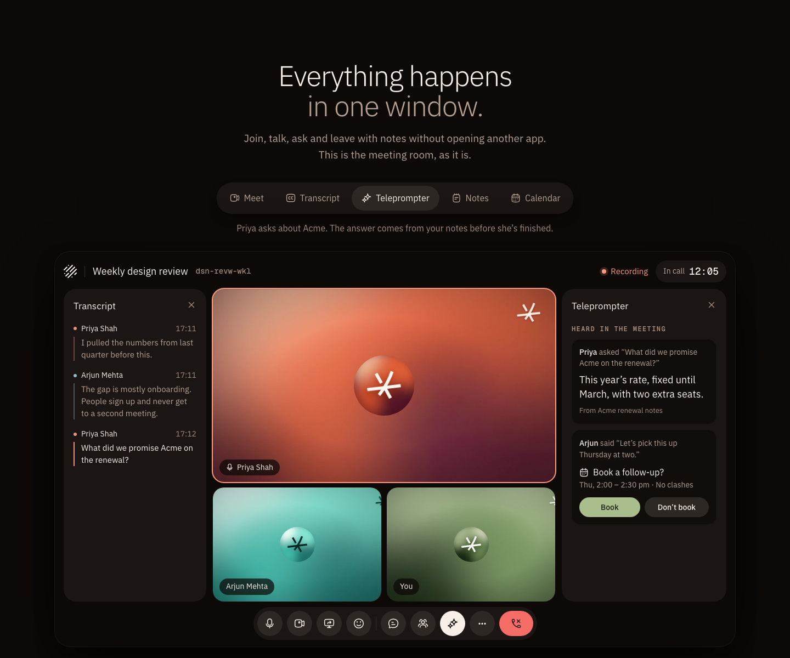
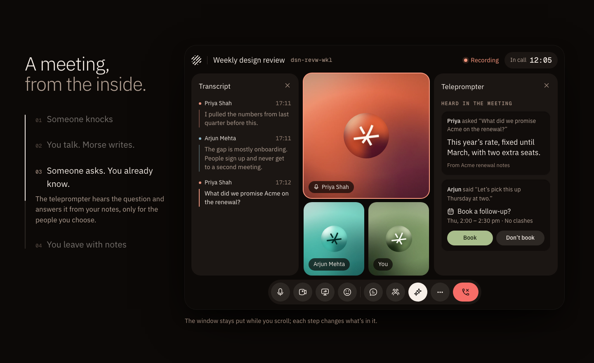
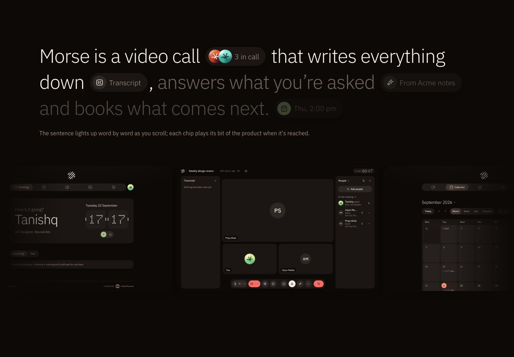
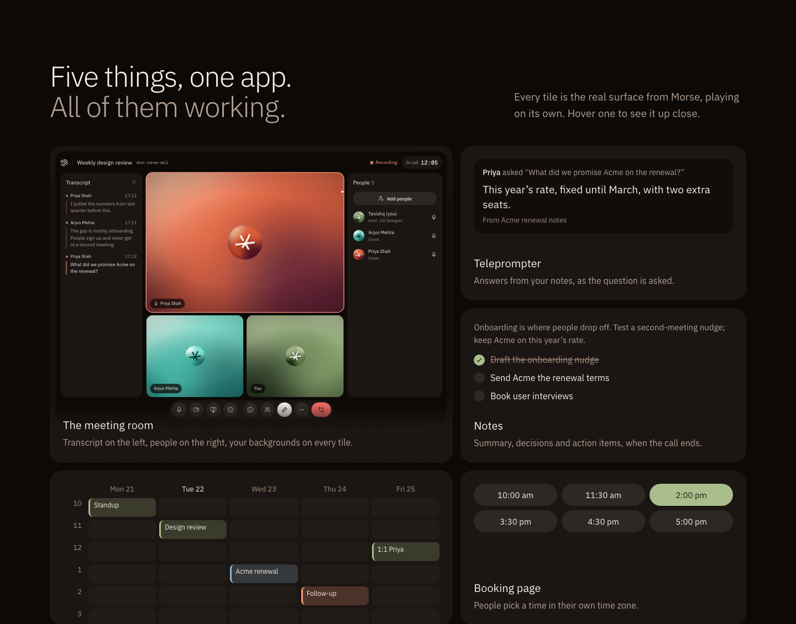

Section 2: showing the product
Four layouts for the section after the hero. Every surface is rebuilt from the real app with its own avatars and profile backgrounds.
1 · One window, five tabs
The real meeting room, full width, with tabs for Meet, Transcript, Teleprompter, Notes and Calendar that morph the window between states.

2 · Pinned story
The window stays pinned while four steps scroll past on the left; each step changes what’s in the room.

3 · Statement with the product inline
A sentence that lights up as you scroll, with live product chips inside it, then a slow rail of real app screens.

4 · Bento of live surfaces
Room, Teleprompter, Notes, Calendar and Booking, each tile playing on its own.
